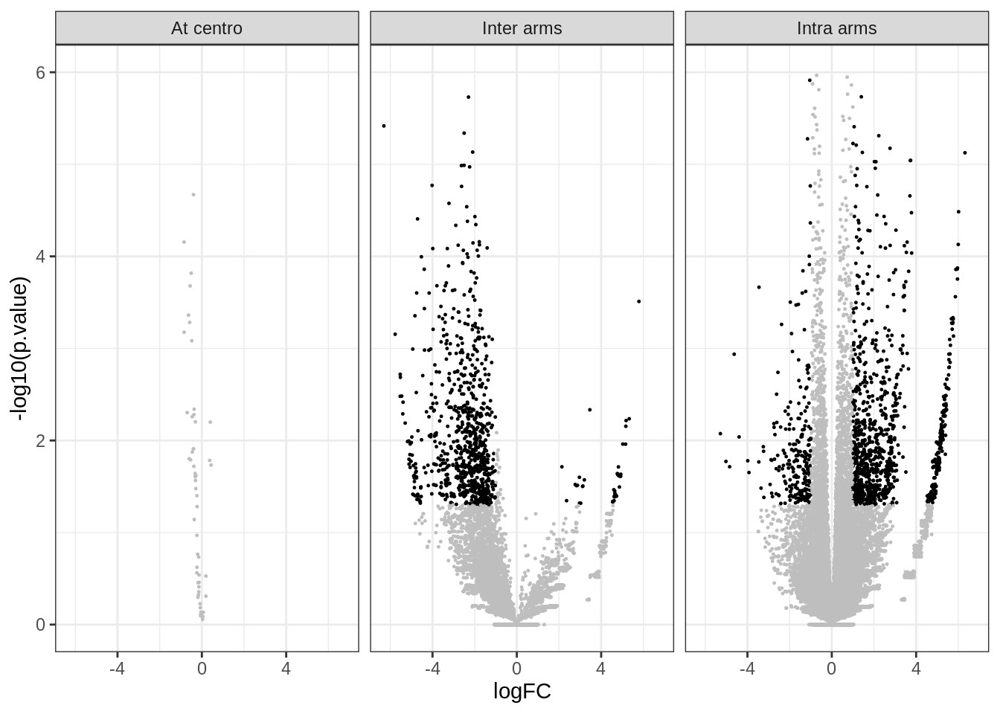

hic <- import(
CoolFile(HiContactsData('yeast_wt', 'mcool')),
focus = 'II',
resolution = 2000
)
## see ?HiContactsData and browseVignettes('HiContactsData') for documentation
## loading from cacheInteroperability of HiCExperiment
Coercing HiCExperiment objects
Into GInteractions
as(hic, "GInteractions")
## GInteractions object with 34063 interactions and 4 metadata columns:
## seqnames1 ranges1 seqnames2 ranges2 | bin_id1
## <Rle> <IRanges> <Rle> <IRanges> | <numeric>
## [1] II 1-2000 --- II 1-2000 | 116
## [2] II 1-2000 --- II 4001-6000 | 116
## [3] II 1-2000 --- II 6001-8000 | 116
## [4] II 1-2000 --- II 8001-10000 | 116
## [5] II 1-2000 --- II 10001-12000 | 116
## ... ... ... ... ... ... . ...
## [34059] II 804001-806000 --- II 810001-812000 | 518
## [34060] II 806001-808000 --- II 806001-808000 | 519
## [34061] II 806001-808000 --- II 808001-810000 | 519
## [34062] II 806001-808000 --- II 810001-812000 | 519
## [34063] II 808001-810000 --- II 808001-810000 | 520
## bin_id2 count balanced
## <numeric> <numeric> <numeric>
## [1] 116 1 NaN
## [2] 118 2 NaN
## [3] 119 3 NaN
## [4] 120 15 NaN
## [5] 121 9 NaN
## ... ... ... ...
## [34059] 521 1 NaN
## [34060] 519 15 0.0560633
## [34061] 520 25 NaN
## [34062] 521 1 NaN
## [34063] 520 10 NaN
## -------
## regions: 407 ranges and 4 metadata columns
## seqinfo: 16 sequences from an unspecified genomeInto data.frame
as(hic, "data.frame") |> head()
## seqnames1 start1 end1 width1 strand1 bin_id1 weight1 center1 seqnames2
## 1 II 1 2000 2000 * 116 NaN 1000 II
## 2 II 1 2000 2000 * 116 NaN 1000 II
## 3 II 1 2000 2000 * 116 NaN 1000 II
## 4 II 1 2000 2000 * 116 NaN 1000 II
## 5 II 1 2000 2000 * 116 NaN 1000 II
## 6 II 1 2000 2000 * 116 NaN 1000 II
## start2 end2 width2 strand2 bin_id2 weight2 center2 count balanced
## 1 1 2000 2000 * 116 NaN 1000 1 NaN
## 2 4001 6000 2000 * 118 NaN 5000 2 NaN
## 3 6001 8000 2000 * 119 NaN 7000 3 NaN
## 4 8001 10000 2000 * 120 0.04611120 9000 15 NaN
## 5 10001 12000 2000 * 121 0.03348075 11000 9 NaN
## 6 12001 14000 2000 * 122 0.03389168 13000 6 NaNInto (sparse) matrix
as.matrix(hic)[1:10, 1:10]
## 10 x 10 sparse Matrix of class "dgTMatrix"
##
## [1,] NaN . NaN NaN NaN NaN NaN NaN NaN
## [2,] . . . . . . . . .
## [3,] NaN . . NaN NaN NaN NaN NaN NaN
## [4,] NaN . NaN NaN NaN NaN NaN NaN NaN
## [5,] NaN . NaN NaN 0.08079721 0.18680431 0.13127403 0.08833001 0.06759757
## [6,] NaN . NaN NaN 0.18680431 0.08183011 0.19176749 0.12687633 0.10078115
## [7,] NaN . NaN NaN 0.13127403 0.19176749 0.08040523 0.13690173 0.13249106
## [8,] NaN . NaN NaN 0.08833001 0.12687633 0.13690173 0.07977117 0.18151495
## [9,] NaN . NaN NaN 0.06759757 0.10078115 0.13249106 0.18151495 0.06494950
## [10,] NaN . NaN NaN 0.06021225 0.07728955 0.09404388 0.12720548 0.11622354
##
## [1,] NaN
## [2,] .
## [3,] NaN
## [4,] NaN
## [5,] 0.06021225
## [6,] 0.07728955
## [7,] 0.09404388
## [8,] 0.12720548
## [9,] 0.11622354
## [10,] 0.06796588
as.matrix(hic, sparse = FALSE)[1:10, 1:10]
## [,1] [,2] [,3] [,4] [,5] [,6] [,7] [,8]
## [1,] NaN 0 NaN NaN NaN NaN NaN NaN
## [2,] 0 0 0 0 0.00000000 0.00000000 0.00000000 0.00000000
## [3,] NaN 0 0 NaN NaN NaN NaN NaN
## [4,] NaN 0 NaN NaN NaN NaN NaN NaN
## [5,] NaN 0 NaN NaN 0.08079721 0.18680431 0.13127403 0.08833001
## [6,] NaN 0 NaN NaN 0.18680431 0.08183011 0.19176749 0.12687633
## [7,] NaN 0 NaN NaN 0.13127403 0.19176749 0.08040523 0.13690173
## [8,] NaN 0 NaN NaN 0.08833001 0.12687633 0.13690173 0.07977117
## [9,] NaN 0 NaN NaN 0.06759757 0.10078115 0.13249106 0.18151495
## [10,] NaN 0 NaN NaN 0.06021225 0.07728955 0.09404388 0.12720548
## [,9] [,10]
## [1,] NaN NaN
## [2,] 0.00000000 0.00000000
## [3,] NaN NaN
## [4,] NaN NaN
## [5,] 0.06759757 0.06021225
## [6,] 0.10078115 0.07728955
## [7,] 0.13249106 0.09404388
## [8,] 0.18151495 0.12720548
## [9,] 0.06494950 0.11622354
## [10,] 0.11622354 0.06796588
as.matrix(hic, use.scores = 'count', sparse = FALSE)[1:10, 1:10]
## [,1] [,2] [,3] [,4] [,5] [,6] [,7] [,8] [,9] [,10]
## [1,] 1 0 2 3 15 9 6 1 2 6
## [2,] 0 0 0 0 0 0 0 0 0 0
## [3,] 2 0 0 12 14 17 6 6 14 11
## [4,] 3 0 12 1 27 20 9 6 11 13
## [5,] 15 0 14 27 38 121 84 46 75 56
## [6,] 9 0 17 20 121 73 169 91 154 99
## [7,] 6 0 6 9 84 169 70 97 200 119
## [8,] 1 0 6 6 46 91 97 46 223 131
## [9,] 2 0 14 11 75 154 200 223 170 255
## [10,] 6 0 11 13 56 99 119 131 255 125Using HiCExperiment in other packages
Importing two replicates of WT and wpl1
library(HiCool)
cfs <- list(
WT_G2M_rep1 = importHiCoolFolder('results/HiCool', '3KHHUE'),
WT_G2M_rep2 = importHiCoolFolder('results/HiCool', 'UVNG7M'),
wpl1_G2M_rep1 = importHiCoolFolder('results/HiCool', 'Q4KX6Z'),
wpl1_G2M_rep2 = importHiCoolFolder('results/HiCool', '3N0L25')
)
cfs
## $WT_G2M_rep1
## CoolFile object
## .mcool file: results/HiCool/matrices/W303_G2M_WT_rep1^mapped-S288c^3KHHUE.mcool
## resolution: 1000
## pairs file: results/HiCool/pairs/W303_G2M_WT_rep1^mapped-S288c^3KHHUE.pairs
## metadata(3): log args stats
##
## $WT_G2M_rep2
## CoolFile object
## .mcool file: results/HiCool/matrices/W303_G2M_WT_rep2^mapped-S288c^UVNG7M.mcool
## resolution: 1000
## pairs file: results/HiCool/pairs/W303_G2M_WT_rep2^mapped-S288c^UVNG7M.pairs
## metadata(3): log args stats
##
## $wpl1_G2M_rep1
## CoolFile object
## .mcool file: results/HiCool/matrices/W303_G2M_wpl1_rep1^mapped-S288c^Q4KX6Z.mcool
## resolution: 1000
## pairs file: results/HiCool/pairs/W303_G2M_wpl1_rep1^mapped-S288c^Q4KX6Z.pairs
## metadata(3): log args stats
##
## $wpl1_G2M_rep2
## CoolFile object
## .mcool file: results/HiCool/matrices/W303_G2M_wpl1_rep2^mapped-S288c^3N0L25.mcool
## resolution: 1000
## pairs file: results/HiCool/pairs/W303_G2M_wpl1_rep2^mapped-S288c^3N0L25.pairs
## metadata(3): log args stats
library(purrr)
library(HiCExperiment)
hics <- map(cfs, import, resolution = 2000)
hics
## $WT_G2M_rep1
## `HiCExperiment` object with 12,998,423 contacts over 6,045 regions
## -------
## fileName: "results/HiCool/matrices/W303_G2M_WT_rep1^mapped-S288c^3KHHUE.mcool"
## focus: "whole genome"
## resolutions(5): 1000 2000 4000 8000 16000
## active resolution: 2000
## interactions: 3653534
## scores(2): count balanced
## topologicalFeatures: compartments(0) borders(0) loops(0) viewpoints(0)
## pairsFile: results/HiCool/pairs/W303_G2M_WT_rep1^mapped-S288c^3KHHUE.pairs
## metadata(3): log args stats
##
## $WT_G2M_rep2
## `HiCExperiment` object with 30,178,172 contacts over 6,045 regions
## -------
## fileName: "results/HiCool/matrices/W303_G2M_WT_rep2^mapped-S288c^UVNG7M.mcool"
## focus: "whole genome"
## resolutions(5): 1000 2000 4000 8000 16000
## active resolution: 2000
## interactions: 6540132
## scores(2): count balanced
## topologicalFeatures: compartments(0) borders(0) loops(0) viewpoints(0)
## pairsFile: results/HiCool/pairs/W303_G2M_WT_rep2^mapped-S288c^UVNG7M.pairs
## metadata(3): log args stats
##
## $wpl1_G2M_rep1
## `HiCExperiment` object with 23,219,590 contacts over 6,045 regions
## -------
## fileName: "results/HiCool/matrices/W303_G2M_wpl1_rep1^mapped-S288c^Q4KX6Z.mcool"
## focus: "whole genome"
## resolutions(5): 1000 2000 4000 8000 16000
## active resolution: 2000
## interactions: 5278190
## scores(2): count balanced
## topologicalFeatures: compartments(0) borders(0) loops(0) viewpoints(0)
## pairsFile: results/HiCool/pairs/W303_G2M_wpl1_rep1^mapped-S288c^Q4KX6Z.pairs
## metadata(3): log args stats
##
## $wpl1_G2M_rep2
## `HiCExperiment` object with 27,438,716 contacts over 6,045 regions
## -------
## fileName: "results/HiCool/matrices/W303_G2M_wpl1_rep2^mapped-S288c^3N0L25.mcool"
## focus: "whole genome"
## resolutions(5): 1000 2000 4000 8000 16000
## active resolution: 2000
## interactions: 6000706
## scores(2): count balanced
## topologicalFeatures: compartments(0) borders(0) loops(0) viewpoints(0)
## pairsFile: results/HiCool/pairs/W303_G2M_wpl1_rep2^mapped-S288c^3N0L25.pairs
## metadata(3): log args stats
library(HiContacts)
merged_replicates <- list(
WT_G2M = merge(hics[[1]][ 'XI'], hics[[2]][ 'XI']),
wpl1_G2M = merge(hics[[3]][ 'XI'], hics[[4]][ 'XI'])
)
library(ggplot2)
maps <- imap(merged_replicates, ~ plotMatrix(
.x, use.scores = 'balanced', limits = c(-3.5, -1.5), caption = FALSE
) + ggtitle(.y))
cowplot::plot_grid(plotlist = maps, nrow = 1)
Transform HiCExperiment into multiHiCcompare-compatible objects
library(multiHiCcompare)
##
## Attaching package: 'multiHiCcompare'
## The following object is masked from 'package:ggplot2':
##
## resolution
## The following object is masked from 'package:HiCExperiment':
##
## resolution
library(dplyr)
##
## Attaching package: 'dplyr'
## The following objects are masked from 'package:dbplyr':
##
## ident, sql
## The following objects are masked from 'package:BiocGenerics':
##
## combine, intersect, setdiff, union
## The following objects are masked from 'package:stats':
##
## filter, lag
## The following objects are masked from 'package:base':
##
## intersect, setdiff, setequal, union
hics_list <- map(hics, ~ .x['XI'] |>
as("data.frame") |>
select(start1, start2, count) |>
mutate(chr = 11) |>
relocate(chr)
)
mhicc <- make_hicexp(
data_list = hics_list,
groups = factor(c(1, 1, 2, 2)
), A.min = 1)
mhicc
## Hi-C Experiment Object
## 2 experimental groups
## Group 1 has 2 samples
## Group 2 has 2 samplesmhicc <- cyclic_loess(mhicc, span = 0.2) |> hic_exactTest()
mhicc
## Hi-C Experiment Object
## 2 experimental groups
## Group 1 has 2 samples
## Group 2 has 2 samples
## Data has been normalizeddf <- results(mhicc) |>
as_tibble() |>
mutate(group = case_when(
region1 < 430000 & region2 > 450000 ~ 'Inter arms',
region1 >= 430000 & region2 <= 450000 ~ 'At centro',
.default = 'Intra arms'
)) |>
mutate(sign = p.value <= 0.05 & abs(logFC) >= 1)
df
## # A tibble: 36,228 × 10
## chr region1 region2 D logFC logCPM p.value p.adj group sign
## <dbl> <int> <int> <dbl> <dbl> <dbl> <dbl> <dbl> <chr> <lgl>
## 1 11 1 1 0 0.540 4.81 5.39e-1 7.95e-1 Intra arms FALSE
## 2 11 1 2001 1 -0.226 5.82 7.00e-1 8.81e-1 Intra arms FALSE
## 3 11 1 4001 2 0.506 7.70 5.94e-2 2.17e-1 Intra arms FALSE
## 4 11 1 6001 3 1.27 8.10 6.49e-7 5.84e-5 Intra arms TRUE
## 5 11 1 8001 4 0.0998 7.55 8.02e-1 9.34e-1 Intra arms FALSE
## 6 11 1 10001 5 0.759 6.57 1.00e-1 3.14e-1 Intra arms FALSE
## # ℹ 36,222 more rows
ggplot(df, aes(x = logFC, y = -log10(p.value), col = sign)) +
geom_point(size = 0.2) +
theme_bw() +
facet_wrap(~group) +
ylim(c(0, 6)) +
theme(legend.position = 'none') +
scale_color_manual(values = c('grey', 'black'))
## Warning: Removed 34 rows containing missing values (`geom_point()`).
gis <- rename(df, seqnames1 = chr, start1 = region1, start2 = region2) |>
mutate(
seqnames2 = seqnames1,
end1 = start1 + 1999,
end2 = start2 + 1999
) |>
filter(abs(logFC) >= 1) |>
df2gi()
cowplot::plot_grid(
plotMatrix(merged_replicates[['WT_G2M']], use.scores = 'balanced', limits = c(-3.5, -1), caption = FALSE),
plotMatrix(merged_replicates[['wpl1_G2M']], use.scores = 'balanced', limits = c(-3.5, -1), caption = FALSE),
plotMatrix(gis, use.scores = 'logFC', scale = 'linear', limits = c(-2, 2), cmap = bgrColors()),
align = "hv", axis = 'tblr', nrow = 1
)
Read more
Read the following sections from the OHCA book:
Session info
## ─ Session info ────────────────────────────────────────────────────────────
## setting value
## version R version 4.3.0 (2023-04-21)
## os Ubuntu 18.04.6 LTS
## system x86_64, linux-gnu
## ui X11
## language (EN)
## collate en_US.UTF-8
## ctype en_US.UTF-8
## tz Europe/Paris
## date 2023-07-28
## pandoc 2.13 @ /usr/bin/ (via rmarkdown)
##
## ─ Packages ────────────────────────────────────────────────────────────────
## package * version date (UTC) lib source
## abind 1.4-5 2016-07-21 [1] CRAN (R 4.3.0)
## aggregation 1.0.1 2018-01-25 [1] CRAN (R 4.3.0)
## AnnotationDbi 1.62.2 2023-07-02 [1] Bioconductor
## AnnotationHub * 3.8.0 2023-04-25 [1] Bioconductor
## basilisk 1.12.1 2023-06-30 [1] Bioconductor
## basilisk.utils 1.12.1 2023-05-19 [1] Bioconductor
## beeswarm 0.4.0 2021-06-01 [1] CRAN (R 4.3.0)
## Biobase 2.60.0 2023-04-25 [1] Bioconductor
## BiocFileCache * 2.8.0 2023-04-25 [1] Bioconductor
## BiocGenerics * 0.46.0 2023-04-25 [1] Bioconductor
## BiocIO 1.10.0 2023-04-25 [1] Bioconductor
## BiocManager 1.30.21.1 2023-07-18 [1] CRAN (R 4.3.0)
## BiocParallel 1.34.2 2023-05-22 [1] Bioconductor
## BiocVersion 3.17.1 2022-11-04 [1] Bioconductor
## Biostrings 2.68.1 2023-05-16 [1] Bioconductor
## bit 4.0.5 2022-11-15 [1] CRAN (R 4.3.0)
## bit64 4.0.5 2020-08-30 [1] CRAN (R 4.3.0)
## bitops 1.0-7 2021-04-24 [1] CRAN (R 4.3.0)
## blob 1.2.4 2023-03-17 [1] CRAN (R 4.3.0)
## bookdown 0.34 2023-05-09 [1] CRAN (R 4.3.0)
## cachem 1.0.8 2023-05-01 [1] CRAN (R 4.3.0)
## Cairo 1.6-0 2022-07-05 [1] CRAN (R 4.3.0)
## calibrate 1.7.7 2020-06-19 [1] CRAN (R 4.3.0)
## cli 3.6.1 2023-03-23 [1] CRAN (R 4.3.0)
## codetools 0.2-19 2023-02-01 [1] CRAN (R 4.3.0)
## colorspace 2.1-0 2023-01-23 [1] CRAN (R 4.3.0)
## cowplot 1.1.1 2020-12-30 [1] CRAN (R 4.3.0)
## crayon 1.5.2 2022-09-29 [1] CRAN (R 4.3.0)
## curl 5.0.1 2023-06-07 [1] CRAN (R 4.3.0)
## data.table 1.14.8 2023-02-17 [1] CRAN (R 4.3.0)
## DBI 1.1.3 2022-06-18 [1] CRAN (R 4.3.0)
## dbplyr * 2.3.3 2023-07-07 [1] CRAN (R 4.3.0)
## DelayedArray 0.26.6 2023-07-02 [1] Bioconductor
## digest 0.6.33 2023-07-07 [1] CRAN (R 4.3.0)
## dir.expiry 1.8.0 2023-04-25 [1] Bioconductor
## dplyr * 1.1.2 2023-04-20 [1] CRAN (R 4.3.0)
## edgeR 3.42.4 2023-05-31 [1] Bioconductor
## ellipsis 0.3.2 2021-04-29 [1] CRAN (R 4.3.0)
## evaluate 0.21 2023-05-05 [1] CRAN (R 4.3.0)
## ExperimentHub * 2.8.1 2023-07-12 [1] Bioconductor
## fansi 1.0.4 2023-01-22 [1] CRAN (R 4.3.0)
## farver 2.1.1 2022-07-06 [1] CRAN (R 4.3.0)
## fastmap 1.1.1 2023-02-24 [1] CRAN (R 4.3.0)
## filelock 1.0.2 2018-10-05 [1] CRAN (R 4.3.0)
## generics 0.1.3 2022-07-05 [1] CRAN (R 4.3.0)
## GenomeInfoDb 1.36.1 2023-06-21 [1] Bioconductor
## GenomeInfoDbData 1.2.10 2023-04-02 [1] Bioconductor
## GenomicRanges 1.52.0 2023-04-25 [1] Bioconductor
## ggbeeswarm 0.7.2 2023-04-29 [1] CRAN (R 4.3.0)
## ggplot2 * 3.4.2 2023-04-03 [1] CRAN (R 4.3.0)
## ggrastr 1.0.2 2023-06-01 [1] CRAN (R 4.3.0)
## glue 1.6.2 2022-02-24 [1] CRAN (R 4.3.0)
## gridExtra 2.3 2017-09-09 [1] CRAN (R 4.3.0)
## gtable 0.3.3 2023-03-21 [1] CRAN (R 4.3.0)
## gtools 3.9.4 2022-11-27 [1] CRAN (R 4.3.0)
## HiCcompare 1.22.1 2023-06-04 [1] Bioconductor
## HiCExperiment * 1.1.1 2023-07-27 [1] Github (js2264/HiCExperiment@9e8f7bb)
## HiContacts * 1.3.1 2023-07-27 [1] Github (js2264/HiContacts@d3bdfef)
## HiContactsData * 1.3.0 2023-05-26 [1] Github (js2264/HiContactsData@adcb51f)
## HiCool * 1.1.0 2023-07-27 [1] local (/home/rsg/repos/HiCool)
## hms 1.1.3 2023-03-21 [1] CRAN (R 4.3.0)
## htmltools 0.5.5 2023-03-23 [1] CRAN (R 4.3.0)
## htmlwidgets 1.6.2 2023-03-17 [1] CRAN (R 4.3.0)
## httpuv 1.6.11 2023-05-11 [1] CRAN (R 4.3.0)
## httr 1.4.6 2023-05-08 [1] CRAN (R 4.3.0)
## InteractionSet 1.29.1 2023-06-13 [1] Github (LTLA/InteractionSet@62cd50a)
## interactiveDisplayBase 1.38.0 2023-04-25 [1] Bioconductor
## IRanges 2.34.1 2023-06-22 [1] Bioconductor
## jsonlite 1.8.7 2023-06-29 [1] CRAN (R 4.3.0)
## KEGGREST 1.40.0 2023-04-25 [1] Bioconductor
## KernSmooth 2.23-22 2023-07-10 [1] CRAN (R 4.3.0)
## knitr 1.43 2023-05-25 [1] CRAN (R 4.3.0)
## labeling 0.4.2 2020-10-20 [1] CRAN (R 4.3.0)
## later 1.3.1 2023-05-02 [1] CRAN (R 4.3.0)
## lattice 0.21-8 2023-04-05 [1] CRAN (R 4.3.0)
## lazyeval 0.2.2 2019-03-15 [1] CRAN (R 4.3.0)
## lifecycle 1.0.3 2022-10-07 [1] CRAN (R 4.3.0)
## limma 3.56.2 2023-06-04 [1] Bioconductor
## locfit 1.5-9.8 2023-06-11 [1] CRAN (R 4.3.0)
## magrittr 2.0.3 2022-03-30 [1] CRAN (R 4.3.0)
## MASS 7.3-60 2023-05-04 [1] CRAN (R 4.3.0)
## Matrix 1.6-0 2023-07-08 [1] CRAN (R 4.3.0)
## MatrixGenerics 1.12.2 2023-06-09 [1] Bioconductor
## matrixStats 1.0.0 2023-06-02 [1] CRAN (R 4.3.0)
## memoise 2.0.1 2021-11-26 [1] CRAN (R 4.3.0)
## mgcv 1.9-0 2023-07-11 [1] CRAN (R 4.3.0)
## mime 0.12 2021-09-28 [1] CRAN (R 4.3.0)
## multiHiCcompare * 1.18.1 2023-07-02 [1] Bioconductor
## munsell 0.5.0 2018-06-12 [1] CRAN (R 4.3.0)
## nlme 3.1-162 2023-01-31 [1] CRAN (R 4.3.0)
## pbapply 1.7-2 2023-06-27 [1] CRAN (R 4.3.0)
## pheatmap 1.0.12 2019-01-04 [1] CRAN (R 4.3.0)
## pillar 1.9.0 2023-03-22 [1] CRAN (R 4.3.0)
## pkgconfig 2.0.3 2019-09-22 [1] CRAN (R 4.3.0)
## plotly 4.10.2 2023-06-03 [1] CRAN (R 4.3.0)
## png 0.1-8 2022-11-29 [1] CRAN (R 4.3.0)
## promises 1.2.0.1 2021-02-11 [1] CRAN (R 4.3.0)
## purrr * 1.0.1 2023-01-10 [1] CRAN (R 4.3.0)
## qqman 0.1.8 2021-04-19 [1] CRAN (R 4.3.0)
## R6 2.5.1 2021-08-19 [1] CRAN (R 4.3.0)
## rappdirs 0.3.3 2021-01-31 [1] CRAN (R 4.3.0)
## RColorBrewer 1.1-3 2022-04-03 [1] CRAN (R 4.3.0)
## Rcpp 1.0.11 2023-07-06 [1] CRAN (R 4.3.0)
## RCurl 1.98-1.12 2023-03-27 [1] CRAN (R 4.3.0)
## readr 2.1.4 2023-02-10 [1] CRAN (R 4.3.0)
## reticulate 1.30 2023-06-09 [1] CRAN (R 4.3.0)
## rhdf5 2.44.0 2023-04-25 [1] Bioconductor
## rhdf5filters 1.12.1 2023-04-30 [1] Bioconductor
## Rhdf5lib 1.22.0 2023-04-25 [1] Bioconductor
## rlang 1.1.1 2023-04-28 [1] CRAN (R 4.3.0)
## rmarkdown 2.23 2023-07-01 [1] CRAN (R 4.3.0)
## rmdformats 1.0.4 2022-05-17 [1] CRAN (R 4.3.0)
## RSpectra 0.16-1 2022-04-24 [1] CRAN (R 4.3.0)
## RSQLite 2.3.1 2023-04-03 [1] CRAN (R 4.3.0)
## rstudioapi 0.15.0 2023-07-07 [1] CRAN (R 4.3.0)
## S4Arrays 1.0.5 2023-07-24 [1] Bioconductor
## S4Vectors 0.38.1 2023-05-02 [1] Bioconductor
## scales 1.2.1 2022-08-20 [1] CRAN (R 4.3.0)
## sessioninfo 1.2.2 2021-12-06 [1] CRAN (R 4.3.0)
## shiny 1.7.4.1 2023-07-06 [1] CRAN (R 4.3.0)
## strawr 0.0.91 2023-03-29 [1] CRAN (R 4.3.0)
## stringi 1.7.12 2023-01-11 [1] CRAN (R 4.3.0)
## stringr 1.5.0 2022-12-02 [1] CRAN (R 4.3.0)
## SummarizedExperiment 1.30.2 2023-06-06 [1] Bioconductor
## tibble 3.2.1 2023-03-20 [1] CRAN (R 4.3.0)
## tidyr 1.3.0 2023-01-24 [1] CRAN (R 4.3.0)
## tidyselect 1.2.0 2022-10-10 [1] CRAN (R 4.3.0)
## tzdb 0.4.0 2023-05-12 [1] CRAN (R 4.3.0)
## utf8 1.2.3 2023-01-31 [1] CRAN (R 4.3.0)
## vctrs 0.6.3 2023-06-14 [1] CRAN (R 4.3.0)
## vipor 0.4.5 2017-03-22 [1] CRAN (R 4.3.0)
## viridisLite 0.4.2 2023-05-02 [1] CRAN (R 4.3.0)
## vroom 1.6.3 2023-04-28 [1] CRAN (R 4.3.0)
## withr 2.5.0 2022-03-03 [1] CRAN (R 4.3.0)
## xfun 0.39 2023-04-20 [1] CRAN (R 4.3.0)
## xtable 1.8-4 2019-04-21 [1] CRAN (R 4.3.0)
## XVector 0.40.0 2023-04-25 [1] Bioconductor
## yaml 2.3.7 2023-01-23 [1] CRAN (R 4.3.0)
## zlibbioc 1.46.0 2023-04-25 [1] Bioconductor
##
## [1] /home/rsg/R/x86_64-pc-linux-gnu-library/4.3
## [2] /usr/local/lib/R-4.3/lib/R/library
##
## ───────────────────────────────────────────────────────────────────────────